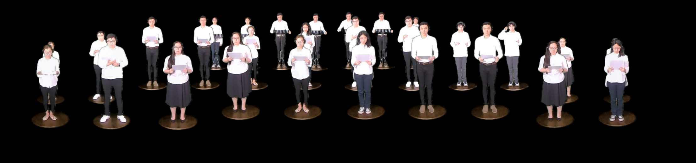
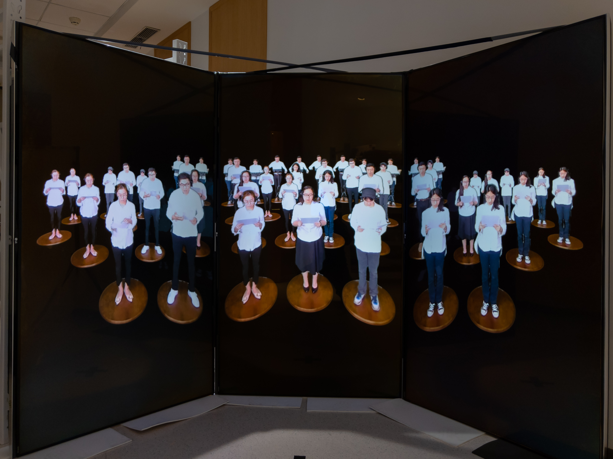

Ode to Joy VR
├── Video -> 180° Stereoscopic VR
├── Audio -> 47-part Acapella / Multi-track Recording
└── Display -> 3D Vertical Displays
├── Audio -> 47-part Acapella / Multi-track Recording
└── Display -> 3D Vertical Displays
>>> Key Features
• 47-part acapella orchestra recreation
• Stereoscopic VR compositing
• Multi-track audio production and mastering
• 47-part acapella orchestra recreation
• Stereoscopic VR compositing
• Multi-track audio production and mastering

VR interface showing acapella arrangement
Ode is an immersive media experience which consists of a 47 part acapella rendition of an orchestra performing Ode to Joy. Filmed and recorded on a Sunday and a half, we composited student volunteers singing their different parts onto a 180 degree stereoscopic VR video. I recorded, mixed, and mastered the different parts to recreate this classic Beethoven piece.

Installation on three vertically-oriented 3D displays